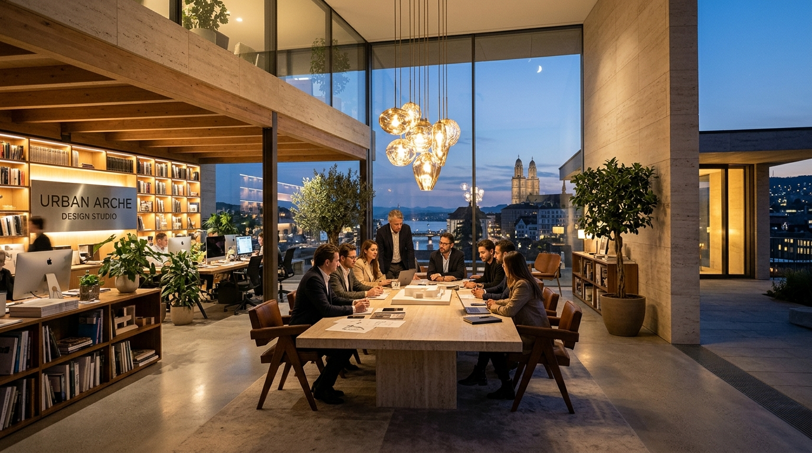
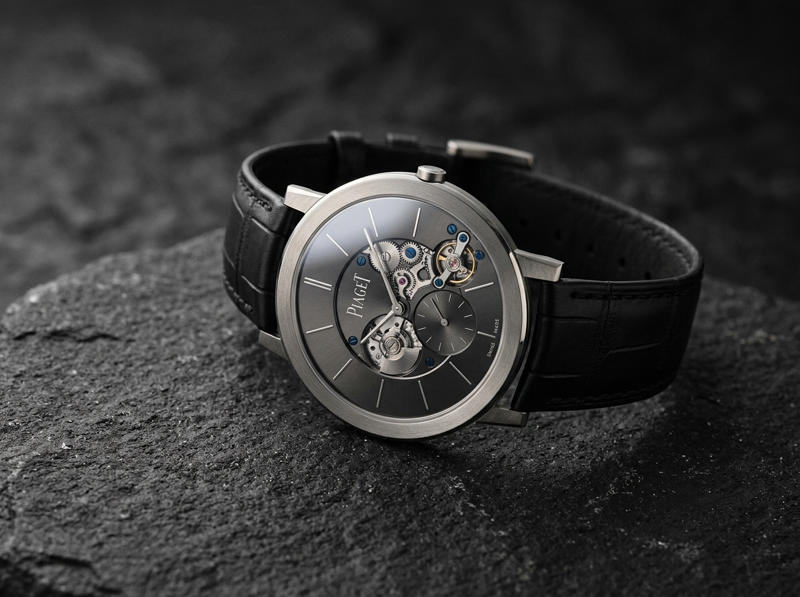

Bespoke WordPress platforms
Purpose-built digital foundations, shaped around a brand’s content, customers, and long-term needs.
Zurich · London · Architectural Digital Consultancy
We engineer bespoke WordPress platforms, brand systems, and luxury commerce experiences for international leaders.

Zurich
A European point of view
London
A global creative outlook
Digital
Built with commercial rigor
Enduring
Made for lasting authority
Capabilities
Purpose-built digital foundations, shaped around a brand’s content, customers, and long-term needs.
A considered visual and editorial system that carries a distinctive identity across every touchpoint.
Refined customer journeys that balance clear storytelling with practical, commercially minded design.
Selected visual studies

A visual direction for a category where craft, detail, and heritage matter.

An editorial approach to atmosphere, service, and considered hospitality.

A crisp visual language for digital services where confidence begins with clarity.
Images and theme copy are drawn from the supplied WordPress package. These visual studies are illustrative; no WordPress content database was included.
Begin a conversation